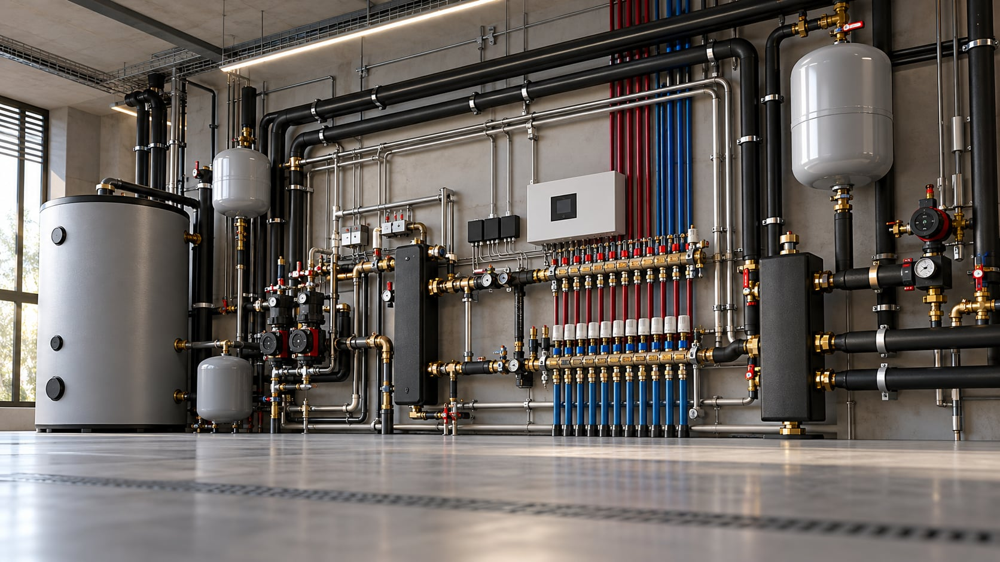

Línea 02 — Hidráulica
Hidráulica.
Grupos, componentes, armarios, booster ACS, depósitos y soluciones a medida para una instalación eficiente y ordenada.
Toda la hidráulica, categoría a categoría.
02 — Gama



Línea 02 — Hidráulica
Grupos, componentes, armarios, booster ACS, depósitos y soluciones a medida para una instalación eficiente y ordenada.
02 — Gama